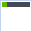
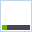

<div class="x_page-header">
	<h1>{$lang->easyxe_setting}</h1>
</div>

<div class="message {$XE_VALIDATOR_MESSAGE_TYPE}" cond="$XE_VALIDATOR_MESSAGE && $XE_VALIDATOR_ID == '/modules/easyxe/tpl/setting/'">
	<p>{$XE_VALIDATOR_MESSAGE}</p>
</div>

<form action="{getRequestUriByServerEnviroment()}" method="post" class="x_form-horizontal">
	<input type="hidden" name="module" value="easyxe">
	<input type="hidden" name="act" value="procEasyxeAdminSaveSetting">
	<input type="hidden" name="xe_validator_id" value="/modules/easyxe/tpl/setting/">

	<div class="x_control-group">
		<label for="enabled" class="x_control-label">{$lang->use_easyxe}</label>
		<div class="x_controls">
			<div class="x_checkbox">
				<input type="checkbox" id="enabled" name="enabled" value="Y" checked|cond="$config->enabled == 'Y'"> 선택하면 관리자 메뉴 및 확장 기능을 사용할 수 있습니다.
			</div>
		</div>
	</div>
	<!--//<div class="x_control-group">
		<div class="x_control-label">관리자 메뉴 위치</div>
		<div class="x_controls">
			<label>
				<input type="radio" name="position" value="top" checked|cond="$config->position != 'top'">  위
			</label> 
			<label>
				<input type="radio" name="position" value="bottom" checked|cond="$config->position == 'bottom'">  아래
			</label>
		</div>
	</div>-->
	<div class="btnArea">
		<input type="submit" value="{$lang->cmd_save}" class="x_btn x_btn-primary">
	</div>
</form>